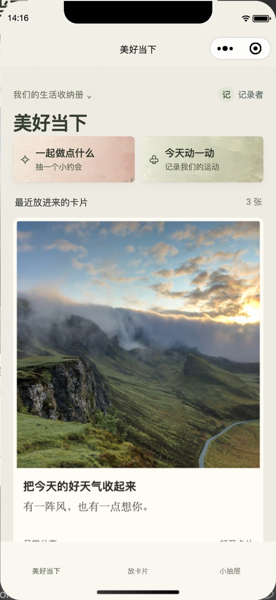
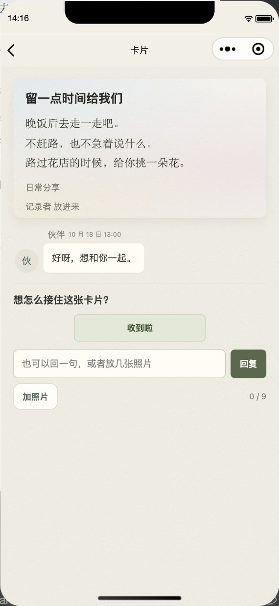

心意有来有回
分享、想念、愿望、待聊和一起做的事，都放进卡片。回应、改期和结果接在原来的故事后面。
小抽屉里的日常
从两个人到几个人的生活，简洁地记录，方便以后回看。那些想说的话、一起做的事和后来发生的故事，都能慢慢成为共同的记忆。

照片、想法和想一起做的事，都有地方放。

把回应和后续接在原来的卡片上，回看时仍是一段完整的故事。
实际小程序界面，使用虚构内容演示。
分享、想念、愿望、待聊和一起做的事，都放进卡片。回应、改期和结果接在原来的故事后面。
近期计划、许愿池、月份收纳册与照片，把尚未发生的期待和已经发生的回忆放在一起。
每个抽屉独立邀请与审批成员。同一个微信可以加入多个抽屉，各自的卡片和照片分开保存。
个人试用版
小抽屉目前仍在个人试用阶段，需要联系我获取体验邀请和邀请码。
欢迎扫码进入公众号「茶叶的小喇叭」，私信「小抽屉」申请体验。也欢迎告诉我哪些地方顺手、哪些地方麻烦，以及你想怎样记录生活。
体验申请由我人工处理；已经关注的朋友，直接发消息即可。